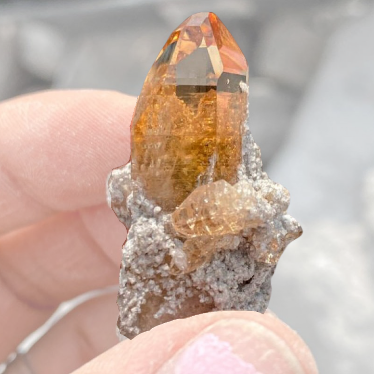
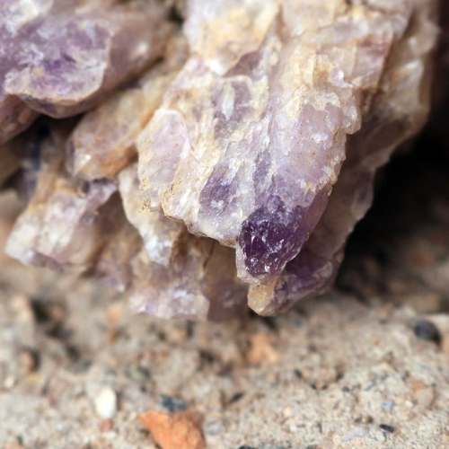
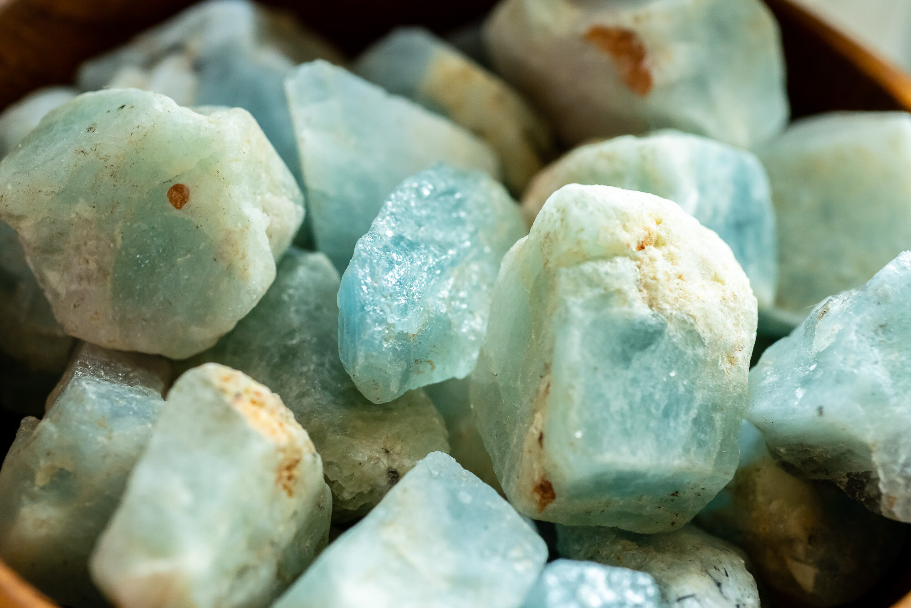
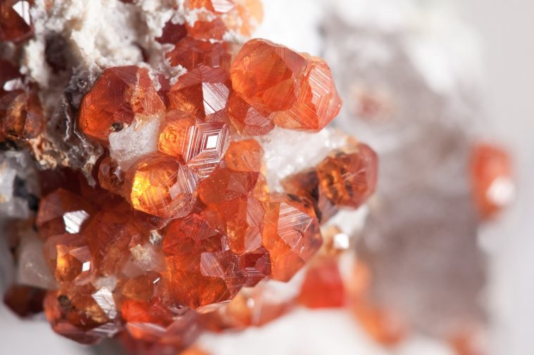
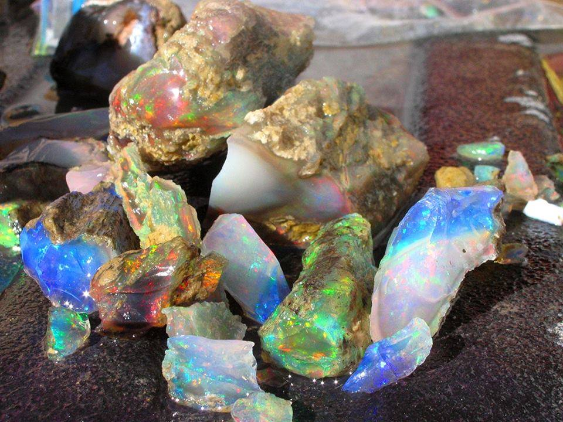
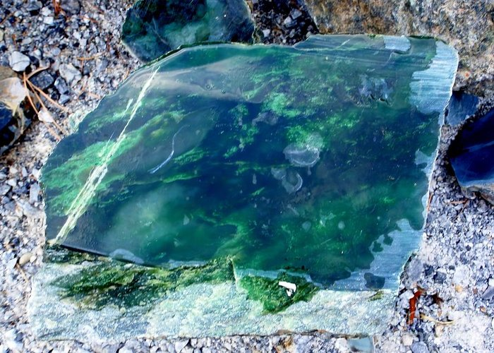
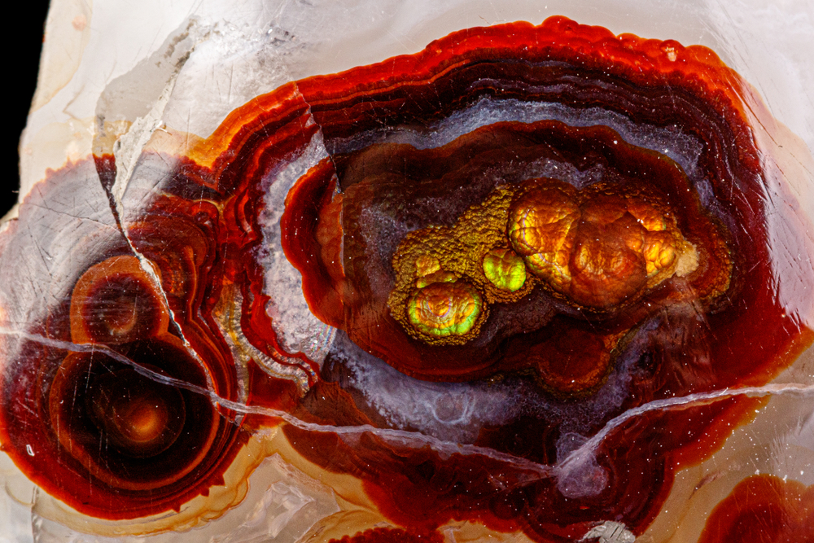
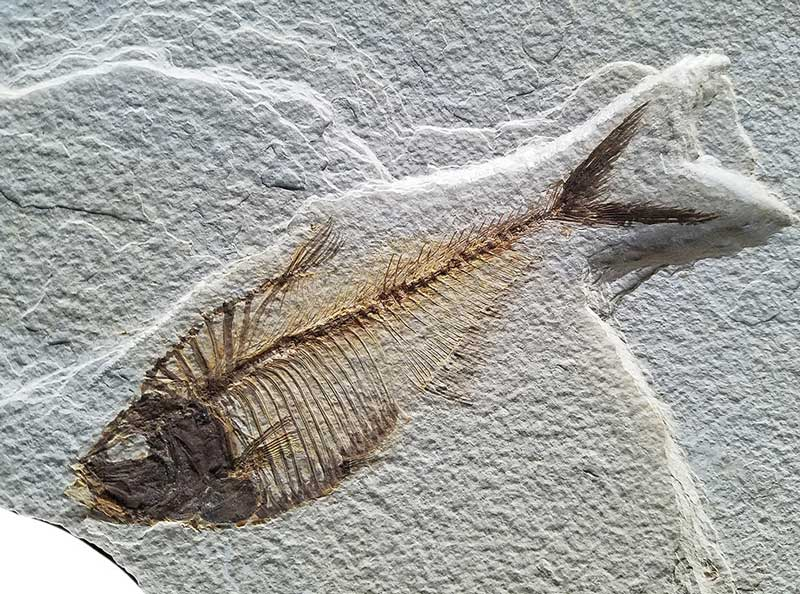
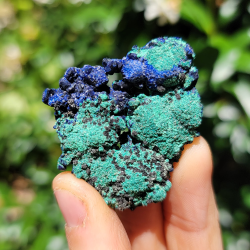
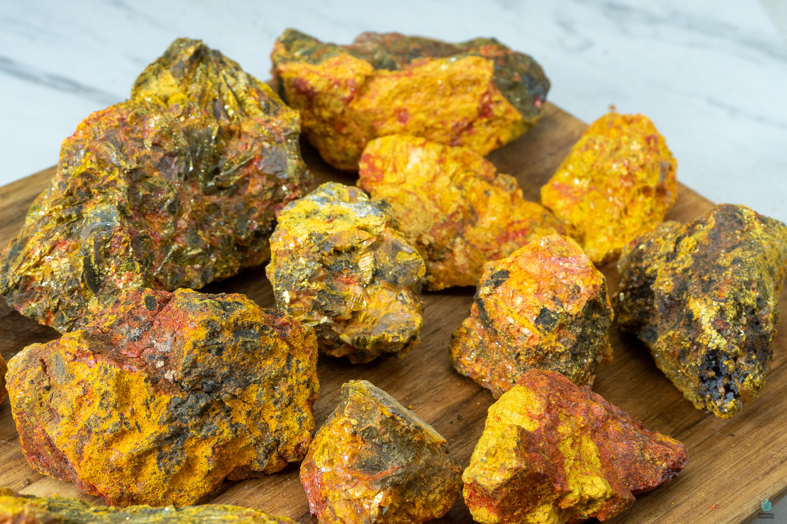

New here?

New to rockhounding and don't know where to start? Not to worry, we will show you the ropes. Click below to head over to our "Getting Started" guide
Getting StartedRocks & Minerals In Idaho


Idaho, known as the Gem State, offers a wealth of rockhounding opportunities for enthusiasts and beginners alike. With its diverse geology and abundance of minerals, gems, and fossils, Idaho is a rockhound's paradise. Discover the state's rich geological history while searching for unique treasures that reflect its dynamic past.
Sponsored Dig Site
Own a digsite you would like to advertize in Idaho? Contact us for more information about being our sponsor of the month! Email sponsors@rockhounding.org for more information.
Dig With UsPopular Rocks In Idaho
-

Amethyst
Idaho is home to several amethyst deposits, with beautiful purple crystals that can be found in locations such as the Diamond Creek area.
Read More -

Aquamarine
The Sawtooth Mountains in Idaho are known for their aquamarine gemstones, which are blue to green-blue variety of beryl.
Read More -

Garnet
Idaho is known for its garnet deposits, particularly in the Emerald Creek area, which produces high-quality star garnets.
Read More -

Opal
Idaho is famous for its precious opal deposits, particularly from the Spencer Opal Mines, where visitors can dig for their own gemstones.
Read More -

Jade
Idaho is known for its jade deposits, particularly nephrite jade, which can be found in areas such as the Idaho Batholith.
Read More -

Fire Agate
Idaho has several fire agate deposits, where the beautiful gemstone with iridescent colors can be found in areas like the Owyhee Mountains.
Read More -

Fossil Fish
Idaho is home to several fossil-rich locations, such as the Clarkia Fossil Bowl, where well-preserved fish fossils can be found.
Read More -

Malachite
The Coeur d'Alene District in Idaho is known for its malachite deposits, a green copper carbonate mineral often found near copper mines.
Read More -

Orpiment
Orpiment, a yellow arsenic sulfide mineral, can be found in areas like the Silver City Mining District in Idaho.
Read More
Popular Areas In Idaho
-
 Spencer Opal Mines
Spencer Opal MinesSpencer Opal Mines, located near Spencer, Idaho, is a famous destination for finding precious opals.
Read More -
 Clarkia Fossil Bowl
Clarkia Fossil BowlThe Clarkia Fossil Bowl in Idaho is a popular site for finding well-preserved fish fossils and plant impressions.
Read More -
 Owyhee Mountains
Owyhee MountainsThe Owyhee Mountains in Idaho are known for their fire agates, jasper, and other colorful gemstones.
Read More -
 Coeur d'Alene District
Coeur d'Alene DistrictLocated in northern Idaho, the Coeur d'Alene District is famous for its silver, lead, zinc, and copper mines, as well as various minerals like malachite.
Read More -
 Silver City Mining District
Silver City Mining DistrictVisitors to the Silver City Mining District in Idaho can search for minerals like orpiment, realgar, and gold.
Read More -
 Hagerman Fossil Beds
Hagerman Fossil BedsHagerman Fossil Beds National Monument in Idaho is a renowned site for finding fossils of prehistoric horses, mastodons, and other ancient creatures.
Read More
Geology of Idaho
Idaho's geologic history dates back over 2.5 billion years, with the formation of its oldest rocks in the Precambrian era. The state's landscape was shaped by various geologic processes, including volcanism, tectonic forces, and erosion.
During the Paleozoic and Mesozoic eras, Idaho was mostly covered by shallow seas, which led to the deposition of sedimentary rocks and the formation of marine fossils. It was also during this time that the state experienced significant tectonic activity and mountain building events, such as the Antler and Sevier orogenies.
In the Cenozoic era, volcanic activity played a major role in shaping Idaho's landscape. The Columbia River Basalt Group, which covers a large portion of the state, formed from massive lava flows. The hotspot responsible for the Yellowstone supervolcano also passed through Idaho, leaving behind a trail of volcanic features, such as the Craters of the Moon National Monument and Preserve.
Idaho's rich mineral resources are a result of its varied geologic history. The state is known for its silver, lead, zinc, and copper deposits, as well as gemstones like opal, garnet, and jasper. This diverse geology has made Idaho an attractive destination for rockhounding enthusiasts and geology enthusiasts alike.